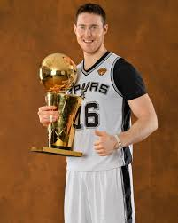
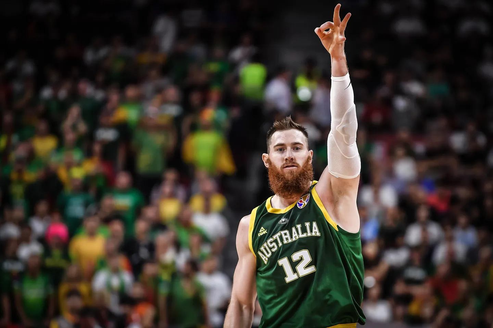

I believe Aron Baynes is one of the most underrated NBA players of the last decade. While his stats may not leap off the page, any dedicated fan of the teams he played for knows just how critical he was to their success. This webpage is dedicated to showing the common NBA fan that Aron Baynes was far more than just a role player—he was a key piece to the winning formula of every team he suited up for.
Career Resumé
Aron Baynes is a resilient and hard-working professional basketball player known for his tenacity, defensive prowess, and team-first mentality. Born in New Zealand and raised in Australia, Baynes began his career playing college basketball at Washington State University before going undrafted in the 2009 NBA Draft. He made his mark internationally, playing in Europe before earning a spot in the NBA. Baynes contributed to championship-caliber teams, including playing a key role off the bench for the San Antonio Spurs during their 2014 NBA Championship run. Over his career, he became known for his physicality, shot-blocking, and ability to stretch the floor with improved three-point shooting. Despite setbacks, including a serious spinal injury in 2021, Baynes’ dedication to recovery and basketball showcases his unyielding determination and passion for the game, cementing his legacy as a respected figure on and off the court.
Career Accomplishments
- College
- Played for 4 years at Washington St.
- Led Washington St. to two consecutive NCAA Tournament appearances in 2007 and 2008, including a Sweet 16 Appearance in 2008
- Averaged a career-best 12.7 PPG and 7.5 RPG in his senior season and shot 100% from 3
- Check out some of his college highlights below!
- Professional
- Played 576 games for 5 NBA franchises
- 2013 NBA Champion with the San Antonio Spurs
- 1x All Defense 2nd Team vote getter
- 100% NBA Finals Field Goal Percentage
- 100% NBA Finals Free Throw Percentage
- Only player in the history of the NBA to have 37 points, 16 rebounds, 9 3PM, and 2 blocks in a game (Highlights below)
 - National Team - Australia
- One of three Australians to win both an Olympic Medal - Bronze in 2020 - and an NBA Title
- Played alongside Patty Mills, Matthew Dellavadova, and Joe Ingles, amongst others, during his career playing for Australia
- Shot 66.7% from 3 during the Olympics
- 3x Olympian
 - Praise From His Peers
- "Aron Baynes is a tremendous worker. He’s a very, very physical player. He’s the kind of guy who does all the little things, all the dirty work, and his teammates respect him for that. He’s a key piece to any team." - Stan Van Gundy
- "Aron Baynes is one of the toughest players we have had. He does the dirty work, the work that doesn’t show up on the stat sheet, but it’s what makes the team better. He’s a solid defender, he’s tough as nails, and he’s a real asset to our team." - Gregg Popovich
- "Baynesy is one of the most important players on our national team. His leadership, physicality, and work ethic set the tone for the rest of us. He’s a true competitor and someone you want on your side in battle." - Patty Mills
- "Aron Baynes is one of the toughest, most selfless players we have. He’s got a great spirit about him. He’s someone who will do anything for the team, whether it’s setting tough screens, playing great defense, or just bringing a level of toughness every day. He’s a huge part of our success." - Brad Stevens
- "He looks like all of Australia" - Tommy Heinsohn
How Aron Baynes compares to other Australians who have played in the NBA

Are you not convinced? Maybe try to play this Game and then read the page again.
Are you still not convinced? Click here to go to the top and be convinced
This webpage was created by Preston Adams.